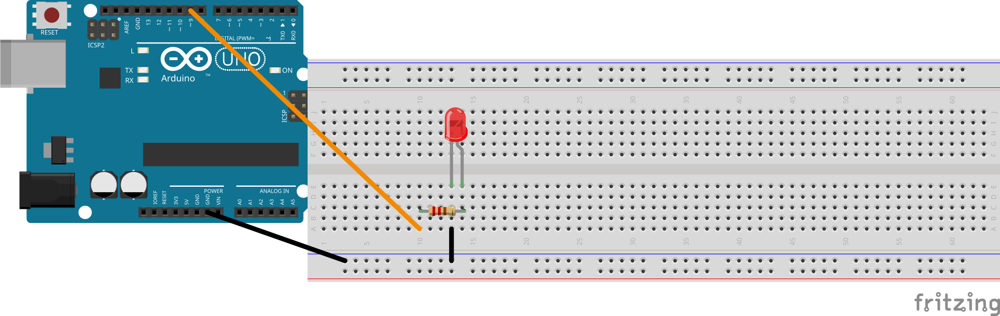

באבן דרך זו מחווטים לד על הברדבורד בפעם הראשונה. זו אבן דרך של חומרה בלבד — בלי העלאת קוד. הקוד מגיע באבן דרך 4.
📋מה עושים
בוחרים לד אחד ממגש החלקים. כל צבע בסדר.
מסתכלים על שתי הרגליים של הלד. הרגל הארוכה היא חיובית (+) והרגל הקצרה היא שלילית (−).
בוחרים נגד של 220 אוהם ממגש החלקים. פסי הצבע שלו: אדום · אדום · חום.
מכניסים את הלד לברדבורד כך שכל רגל נמצאת בשורה שונה (לא באותה שורה — זה יקצר ביניהן).
מחברים את הרגל הארוכה (+) של הלד לרגל דיגיטלית 9 של הארדואינו, דרך הנגד של 220 אוהם. הנגד יושב בין הרגל הארוכה של הלד לבין רגל 9.
מחברים את הרגל הקצרה (−) של הלד לרגל GND של הארדואינו בעזרת חוט ג'אמפר.
🔌תרשים החיווט
Arduino pin 9 ───[220 Ω]───┬─── LED long leg (+)
│
▼
LED short leg (−) ─── Arduino GND
💻 קלוד קוד באבן הדרך הזאת
באבן דרך זו רק מחווטים — אין העלאת קוד ואין פנייה לקלוד קוד. הוא מחכה לאבן הדרך הבאה.
תרשים מלא עם כל ארבעת מצבי החיווט נמצא בכרטיסיית העזר R1.

רגל 9 ← נגד 220 אוהם ← רגל ארוכה של הלד. רגל קצרה ← GND. גרסה מלאה בכרטיסיית עזר R1 (חיווט 1).
👀מה אמורים לראות
הלד מחובר לברדבורד. הרגל הארוכה עוברת דרך הנגד לרגל 9, והרגל הקצרה מחוברת ל-GND.
הלד עדיין לא מאיר — עדיין לא העלינו קוד שיפעיל אותו. זה יקרה באבן דרך 4. עכשיו רק בודקים שהחיווט נכון.
✅סיימנו כש
הלד מוכנס לברדבורד כאשר שתי הרגליים בשורות שונות
הרגל הארוכה מחוברת לרגל 9 דרך נגד של 220 אוהם
הרגל הקצרה מחוברת ל-GND
המורה (או בבדיקה עצמית מול כרטיסיית העזר R1) אישר שהחיווט נכון
🪄תקועים?
קודם כל בודקים את כרטיסיית העזר R1 (חיווט) — היא מראה בדיוק איך הלד אמור להיראות בברדבורד. אם עדיין לא בטוחים איזו רגל ארוכה או איזה חור מתחבר לרגל 9, קוראים למורה. זו אבן הדרך הראשונה של חיווט, והמורה יעזור.